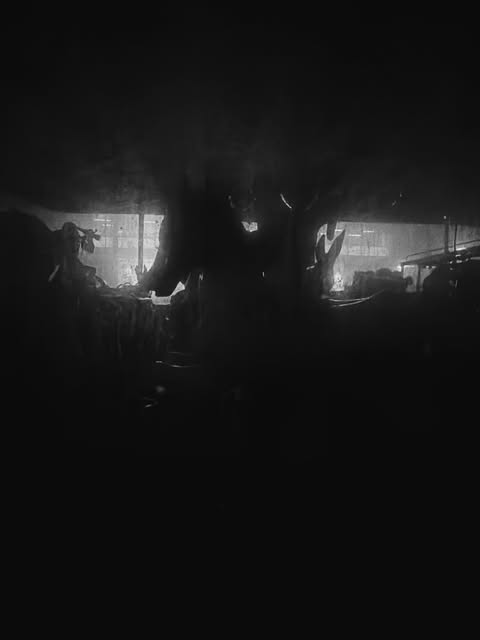

Domus Cultura — Opening Session
Art, conversation and a live selection by Juice+.
Register ↗Events / Real space
Pop-ups, gallery walks, atelier conversations and listening sessions built around close attention and genuine exchange.

01 / Programme
The first programme is in development. Register interest to receive confirmed dates first.
Art, conversation and a live selection by Juice+.
Register ↗Small-format encounters with artists and their working spaces.
Join list ↗Focused visits connecting exhibitions, architecture and public space.
Join list ↗A shared hour of sound, references and conversation.
Join list ↗Collaborate
Artists, galleries and independent spaces can propose a visit, event or collaboration.
Propose an event ↗